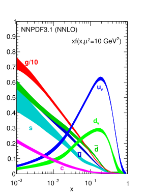
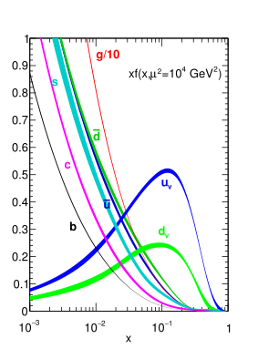

1.3 Phenomenology of Proton Collisions
Once the properties and limitations of the theoretical model that best describes the current understanding of the fundamental structure and dynamics of nature have been described, we can delve into how to model proton-proton collisions from a quantitative perspective, so theoretical predictions can be contrasted with experimental results at the LHC. The focus of this section then is to make sense of the various outcomes of high-energy proton-proton collisions and how we can predict their relative rates of occurring given some initial state conditions of the interaction.
1.3.1 Main Observables
A related consideration that is useful as an introduction to the aforementioned topic is the question of what outcomes can originate as a result of proton-proton collisions. An answer somehow circular but compatible with our current interpretation of the universe is that everything that could be produced would be produced, meaning that any outcome that can happen in a way that is consistent with the underlying properties of nature is possible. Even though probably the true description of the properties of nature is not known, as discussed in Section 1.1, the Standard Model provides an effective model and restricts considerably the space of possible outcomes, in a way that can be compared with experimental observations. It is worth noting that alternative descriptions of nature, such as those motivated by the known limitations of the SM and reviewed in Section 1.2, may provide alternative mechanisms for the production of outcomes that are not allowed by the SM, and hence often drive the experimental searches for evidence of New Physics.
For those physical processes that could happen as a product of a proton-proton collision, under the assumption of validity of a particular theoretical model, their total expected rate of occurrence is one the most relevant quantities to predict and compare with observations. To ease its experimental interpretation, the rate of occurrence of any given subnuclear process is commonly expressed as a cross section \(\sigma\), which has dimensions of area and is typically expressed in submultiples of barn (\(1\ \textrm{barn} = 10^{-28} \textrm{m}^2\)). The advantage of cross sections over rates is that their value is independent from the density of the incident particle fluxes. The rate, or probability per unit of time, of a process occurring can be computed simply by multiplying its cross section by the instantaneous luminosity \(\mathcal{L}_\textrm{inst}\), which corresponds to the number of particles per unit of area per unit of time crossing in opposite directions in the collision volume.
Another related concept, which is especially important for simulating interactions, is the differential cross section \(d\sigma\). While the initial state conditions are fixed, the rate of occurrence of a physical process can be expressed as a function of some final-state variables, such as the angle and energy of outgoing particles. While these variables can be integrated over to compute total cross sections \(\sigma\), the integrand is proportional to the probability density of each outcome happening as a function of final-state variables, hence its evaluation is crucial for a correct modelling of their multi-dimensional distributions via random sampling. In fact, we will be dealing with differential cross sections instead of total process cross section in this section for generality.
1.3.2 Parton Distribution Functions
A complication that has not been addressed yet is that protons are composite particles, which within a static interpretation can be thought of as the combination of two up-type quarks and one down-type quark bound together via the strong force. The dynamics of proton-proton scattering are then dictated by quantum chromodynamics (see sec. 1.1.2), which cannot be addressed using perturbation theory for low energies, limiting the first principles computation of relevant observables for the most common interactions. That said, predictions regarding the interaction outcomes from the hard scattering of proton constituents (referred to as partons) can be perturbatively approximated under the assumption of asymptotic freedom at high energies. This allows the modelling of very high energy collisions at particle colliders, which are the focus of most LHC analyses, even if the details about the parton structure cannot be calculated.

Figure 1.3: Distribution functions for the different partons at low and high energies. The contribution from gluons shown is 1/10 of the actual contribution. Image adapted from the NNPDF collaboration [46].. a — Low Energy Scale \(\mu^2 = 10 \textrm{GeV}^2\), b — High Energy Scale \(\mu^2 = 10^4 \textrm{GeV}^2\)
When modelling hard (i.e. high energy) scattering processes, a non-perturbative input is required, mainly the probability of finding a particular proton constituent with a certain momentum fraction inside each of the colliding protons, referred to as the parton distribution function (PDF). The model of the proton as three quarks coupled by strong force is too simplistic for modelling proton-proton scattering realistically, especially at high energies. The continuous exchange of gluons between the three constituent quarks effectively generates a sea of virtual quark-antiquark pairs from which other partons can scatter off. Consequently, in the interaction of two protons, not only the constituent quarks, referred as to valence quarks, can take part in the hard scattering process but also gluons and sea quarks.
At the time of writing, PDFs are not computable from first principles so they have to be parametrised and extrapolated from various experimental sources including fixed-target proton deep inelastic scattering (DIS) and previous collider studies. It is worth noting that the distribution functions depend strongly on the energy scale of the process, yet the evolution for parton densities can be modelled theoretically [47]–[49]. Given their relevance for computing observables in high-energy colliders, several research collaborations such as NNPDF [46] provide accurate estimations that can be readily used for simulation and prediction. In Figure 1.3 are shown the parton distribution functions at two different energy scales estimated by one of those collaborations, at lower energy scales the valence quarks (up and down) dominate while when we extrapolate at higher energies, gluon scattering become the most likely outcome for the interaction.
1.3.3 Factorisation and Generation of Hard Processes
Let us consider the computation of the differential cross section for a hard scattering process \(pp \rightarrow X\), which will be denoted as \(d\sigma(pp \rightarrow X)\), for two protons colliding head on at centre of mass energy \(s\). Here \(X\) denotes a possible outcome for the interaction, not necessarily a single particle and the proton remnants (e.g. a Higgs boson \(X=H + \textrm{other}\)), but a set of particles (e.g. a bottom quark-antiquark pair \(X=\textrm{b}\bar{\textrm{b}} + \textrm{other}\)). According to the QCD factorisation theorem [50], the differential cross section for \(d\sigma(pp \rightarrow X)\) can be expressed as a sum of functions of the partonic cross section \(d\hat{\sigma}_{ij \rightarrow X}\):
\[d\sigma(pp \rightarrow X) = \sum_{i,j} \int f_i(x_1, \mu_F^2) f_j(x_2, \mu_F^2) d\hat{\sigma}_{ij\rightarrow X} (s x_1 x_2,\mu_R^2,\mu_F^2) d x_1 d x_2\qquad(1.32)\]
where \(i\) and \(j\) indicate the partons involved (e.g. a certain type of quark or a gluon), \(f_i(x_1, \mu_F^2)\) and \(f_j(x_2, \mu_F^2)\) are their parton distribution functions for given momentum fractions \(x_1\) and \(x_2\) respectively, \(\mu_F\) is the factorisation scale and \(\mu_R\) is the renormalisation scale. The differential partonic cross section \(d\hat{\sigma}_{ij\rightarrow X}\) for a centre of mass energy of the interacting partons \(\hat{s}=s x_1 x_2\), can be calculated perturbatively at different expansion orders from the Lagrangian density as hinted in Section 1.1. The total cross section \(\sigma(pp \rightarrow X)\) can then be attained by integrating out all final state quantities, commonly referred as phase space variables, in the differential total cross section element \(d\sigma(pp \rightarrow X)\). It is worth pointing out that for simple cases (small number of particles in the final state) is often possible to integrate out the final state phase space variables directly in the partonic differential cross section \(d\sigma(ij \rightarrow X)\), and thus directly compute the total cross section by a similar parton distribution function integration as the one used in Equation 1.32.
As more more complex final states or higher perturbative orders are considered, the final state phase space integration over many particles can rapidly become intractable. This motivates the use of Monte Carlo integration techniques, especially those based on importance sampling such as vegas [51], which provide convergence rates that scale well with the integral dimensionality by randomly sampling the multi-dimensional space. In fact, the initial state integration over parton types and momenta fractions can also be carried out jointly with these methods, greatly simplifying the computation procedure. The resulting weighted random samples can be used to estimate not only the total cross section, but also any other observable or distribution that is a function of the differential cross section \(d\sigma(pp \rightarrow X)\). A common observable that is often used in experimental high energy physics is the efficiency \(\epsilon\), or fraction of observations from a specific process \(pp \rightarrow X\) that are expected to satisfy a given condition that is a function of the final state details.
In collider experiments typically we cannot measure directly the properties of final states produced in the hard scattering, either because of the characteristics of the detector, the decay/hadronisation of particles producing other secondary particles, or due to additional physical effects occurring in a bunch crossing not accounted in Equation 1.32, such as additional collision products due to multiple interactions or processes comprising the proton remnants. Thus it is very useful in the construction of the complete model to consider the problem of generation of realistic collision products.
Taking into consideration that some of the computational techniques for including subsequent physical processes and the detailed simulation of the detectors are considerably resource intensive, as will be detailed in Section 1.3.4 and Section 2.3.2 respectively, the use of weighted samples is not a very efficient approach. Hence, for the generation of simulated products of high-energy collisions, also referred to as event generation, an acceptance-rejection sampling step is carried out to obtain an unweighted sample, where the relative frequency of each simulated outcome is expected to match its theoretical prediction. After such procedure, the calculation of all observables is also simplified, because the weight of all samples can be taken as a constant, e.g. a unitary weight \(w=1\), so the computation of quantities of interest such as efficiencies becomes trivial.
1.3.4 Hadronization and Parton Showers
In order to link the hard scattering process outcome with the actual observable quantities that can be detected in an experiment, it is necessary to account for the radiation of soft gluons or quarks form the initial or final state partons in the collision, as well as the formation of hadrons from any free parton due to colour confinement (see Section 1.1.2). Additional processes that affect the collision outcome include secondary interactions between the protons, as well as the decays of all generated unstable particles. An example of the typical complexity of the physical processes occurring as a result of a single high-energy proton-proton scattering is provided in Figure 1.4. These and additional minor effects (e.g. colour reconnection) are accounted by parton showering (PS) programs, that take as the input the generated particle outcome of the hard scattering and return a set of the resulting stable particles that would propagate through the detector.
![Figure 1.4: Diagram of a proton-proton collision and the underlying physical processes occurring therein, adapted from [52]. The dark green ellipses following the three parallel arrows represent the incoming hadrons. The main interaction between partons is shown in red colour, producing a tree-like structure of decays, in turn producing partons that rapidly transition to hadrons (light green ellipses) and decay (dark green circles) as well as soft photon radiation (yellow lines). The blue lines represent the interaction between partons and the path of the the initial hadron remnants followed by light blue ellipses. For completeness, an additional hard interaction within the same hadron-hadron process is shown in purple, which often has to be accounted to obtain realistic simulations.](gfx/101_chapter_1/event_shower.png)
Figure 1.4: Diagram of a proton-proton collision and the underlying physical processes occurring therein, adapted from [52]. The dark green ellipses following the three parallel arrows represent the incoming hadrons. The main interaction between partons is shown in red colour, producing a tree-like structure of decays, in turn producing partons that rapidly transition to hadrons (light green ellipses) and decay (dark green circles) as well as soft photon radiation (yellow lines). The blue lines represent the interaction between partons and the path of the the initial hadron remnants followed by light blue ellipses. For completeness, an additional hard interaction within the same hadron-hadron process is shown in purple, which often has to be accounted to obtain realistic simulations.